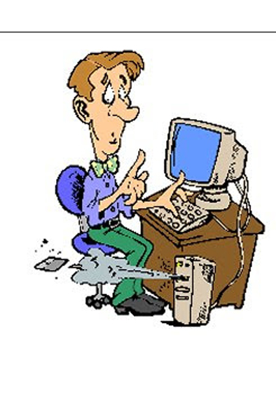

Conceptos destacados de INFORMÁTICA
La palabra informática tiene un origen francés, proviniendo del vocablo “informatique”, cuya traducción es información automática. Puede decirse que la informática es entonces el estudio científico y técnico que posibilita que la información por medio del uso de ordenadores (dispositivo electrónico destinado a procesar la información y obtener resultados) sea tratada de modo automático. Es una ciencia que utiliza en su desarrollo otras ciencias, como la electrónica, la física y la matemática. También se la conoce a partir de su denominación en inglés “computer science” como ciencia de la computación.
La información una persona la puede recibir de modos diversos: a través de un diario, de la radio, de la televisión, escuchando a sus maestros, etcétera. La diferencia con la informática es que en este caso la información es procesada, o sea, almacenada y organizada de acuerdo a distintos criterios de clasificación, y transmitida, todo lo cual se hace automáticamente.
El campo de la informática que es la ciencia de la computación, en su aspecto más práctico, surgió luego de la Segunda Guerra Mundial, con un ámbito aplicado a lo militar y científic,o exclusivamente, se extiende actualmente a todos los ámbitos de la vida. Comenzó con una función de procesador de textos, mucho más lento que los que existen en la actualidad.
Hoy es un instrumento eficaz del mundo globalizado. La creación del microchip o circuito integrado, de Internet y de los teléfonos móviles, han dado aun más apogeo a la informática. La informática permite la creación de computadoras cada vez más ágiles en su funcionamiento y el desarrollo de programas para ser aplicados en diversos campos, como medicina, ingeniería, ciencias contables, jurídicas, en campos artísticos, etcétera.
Estudia y crea computadoras y programas, los modifica y actualiza, mediante la utilización de algoritmos, para adaptarlos a las necesidades humanas, usando el formato digital. El estudio de los componentes materiales de la máquina se llama Hardware, y el de los programas, se denomina Software.